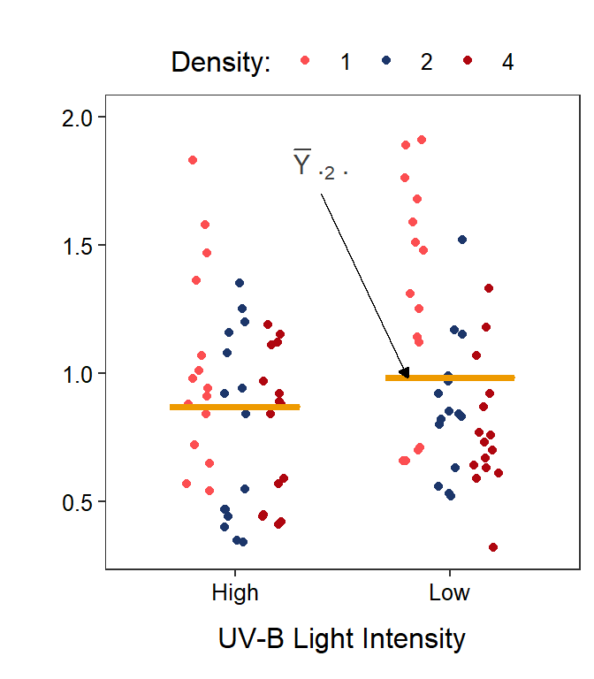
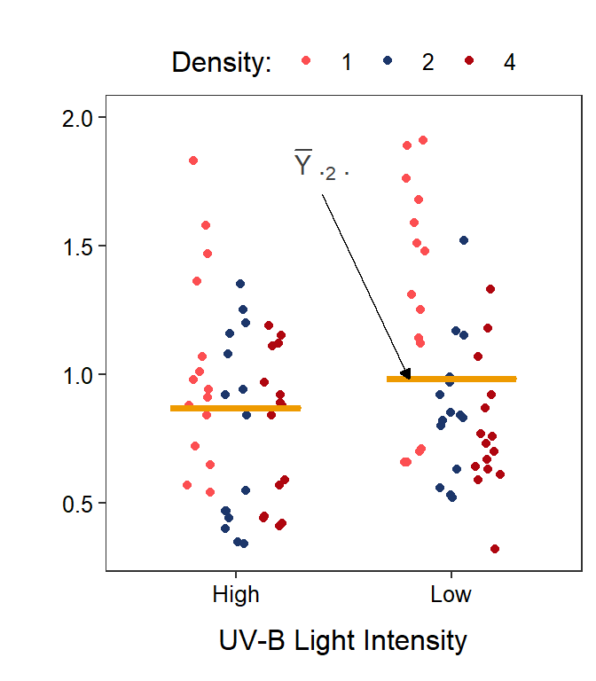

Module 11 Two-Way Analytical Foundation
In this module we examine the analytical foundation of a Two-Way ANOVA. In many ways, this foundation is very similar to that for the One-Way ANOVA. However, there are some striking differences. The similarities and differences are discussed here.
11.1 Terminology
11.1.1 Definitions
Some terminology must be developed before discussing the objective criteria for determining the significance of main and interaction effects in a Two-Way ANOVA. The tadpole body mass study discussed in Module 10 was an experiment with two factors: UV-B light intensity with two levels (High and Low) and the density of tadpoles with three levels (1, 2, and 4 tadpoles). The combination of these two factors created six treatments with 15 individuals or replicates per treatment.53
11.1.2 Graphing
Two-factor studies can be visualized with the response variable on the y-axis, levels of one factor on the x-axis, and levels of the other factor shown with different colors or symbols. It does not make a difference which factor is on the x-axis, though putting the factor with more levels on the x-axis makes for a less cluttered graph.
In this module, two graphs will often be shown side-by-side. These are the same data but the role of the factor variables in the plot are reversed. For example, Figure 11.1-Left has tadpole density on the x-axis with different colors for the UV-B light levels and Figure 11.1-Right has UV-B light intensity on the x-axis with different colors for the tadpole densities.
Figure 11.1: Tadpole body mass by density and UV-B light intensity factors. The points are jittered with respect to the x-axis so that each point can be seen. The two panels differ only in which factor variable is displayed on the x-axis.
11.1.3 Symbols
In a two-factor study, one of the factors is generically labeled as Factor A and the other factor is generically labeled as Factor B. Ultimately it does not make a difference which factor is considered first. In this example, tadpole density will be the first (A) factor and UV-B light intensity will be the second (B) factor.
Factor A has \(a\) levels and Factor B has \(b\) levels. In the tadpole example, \(a\)=3 (1, 2, and 4 tadpoles per tank) and \(b\)=2 (High and Low UV-B light intensity). We use \(i\) to index the first (A) factor and \(j\) to index the second (B) factor. Thus, \(i\) varies from 1 (first level) to \(a\) (last level) and \(j\) varies from 1 to \(b\).
For the sake of simplicity the same number of replicates are used in each treatment.54 With this \(m\) is the number of replicates per treatment. In the tadpole example \(m\)=15. We use \(k\) as an index for individuals within a treatment. Thus, \(k\) varies from 1 to \(m\) for each treatment.
With these definitions, the response variable recorded on the \(k\)th individual in the treatment defined by the \(i\)th level of Factor A and the \(j\)th level of the Factor B is \(Y_{ijk}\). For example, the body mass of tadpoles in the seventh tank (\(k\)=7) that received 1 tadpole (\(i\)=1) and low UV-B light (\(j\)=2) would be \(Y_{127}\) (Figure 11.2).
Figure 11.2: Tadpole body mass by density and UV-B light intensity factors. The points are jittered with respect to the x-axis so that each point can be seen. The two panels differ only in which factor variable is displayed on the x-axis.
The mean response for the \(i\)th level of Factor A and the \(j\)th level of Factor B is denoted by \(\overline{Y}_{ij\cdot}\). The \(\overline{Y}_{ij\cdot}\) are called treatment means in an experiment or group means in an observational study. The “dot” in \(\overline{Y}_{ij\cdot}\) replaces the subscript in \(Y_{ijk}\) that was summed across when computing the mean. Treatment means are calculated by summing across individuals in a treatment (the \(k\) subscript), thus the \(k\) subscript is replaced with a dot. As an example, the treatment mean body mass for tadpoles in the 1 tadpole density (\(i\)=1) and low UV-B light intensity (\(j\)=2) would be \(\overline{Y}_{12\cdot}\) (Figure 11.3).55
Figure 11.3: Same as previous figure except that six treatments means are shown with horizontal blue segments.
The mean response for the \(i\)th level of Factor A is given by \(\overline{Y}_{i\cdot\cdot}\). These level means are calculated by first summing individuals in each treatment (the \(k\) subscript) and then summing across UV-B light levels (the \(j\) subscript); thus, both the \(k\) and \(j\) subscripts are replaced with a “dot.” For example, the mean body mass for tadpoles in the 1 tadpole density (\(i\)=1) is \(\overline{Y}_{1\cdot\cdot}\) (Figure 11.4-Left).
 

Figure 11.4: Same as previous figure except that three density level means are shown on the left and two UV-B light level means are shown on the right with horizontal orange segments.
Similarly, the mean response for the \(j\)th level of Factor B is given by \(\overline{Y}_{\cdot j\cdot}\). These level means are calculated by first summing individuals in each treatment (the \(k\) subscript) and then summing across tadpole density levels (the \(i\) subscript); thus, both the \(k\) and \(i\) subscripts are replaced with a “dot.” For example, the mean body mass for tadpoles in the low UV-B light intensity (\(j\)=2) is \(\overline{Y}_{\cdot2\cdot}\) (Figure 11.4-Right).
Finally, the mean response regardless of level of any factor is given by \(\overline{Y}_{\cdot\cdot\cdot}\) and is called the grand mean (Figure 11.5). The grand mean is calculated by summing individuals in each treatment, then summing across UV-B light intensities, and then summing across tadpole densities; thus, all three subscripts are replaced with a “dot.”
Figure 11.5: Same as previous figure except that the grand means is shown with a horizontal red segment in each panel.
In symbols for means, dots replace lettered subscripts for subscripts summed across when calculating the mean.
11.2 Models
The total and within SS and df are effectively the same with a Two-Way ANOVA as with a One-Way ANOVA, though their calculation may look more complicated. In a Two-Way ANOVA, the full model uses a separate mean for each treatment group and the simple model uses a single grand mean for all treatment groups. In essence, the simple model says that each treatment mean should be modeled by a common mean (Figure 11.6-Left), whereas the full model says that each treatment mean should be modeled by a separate mean (Figure 11.6-Right). It should be evident that this is the same simple and full models used in a One-Way ANOVA.

Figure 11.6: Tadpole body mass by density and UV-B light levels (different colored points) with the grand mean of the simple model (Left) and the treatments means of the full model (Right) shown.
11.3 SSTotal, dfTotal, and MSTotal
As discussed with a One-Way ANOVA, SSTotal measures the lack-of-fit of the observations around the simple model of a grand mean. Visually, this computation sums the square of the vertical distance of each point from the red line at the grand mean in Figure 11.6-Left; i.e.,
\[ \text{SS}_{\text{Total}} = \sum_{i=1}^{a}\sum_{j=1}^{b}\sum_{k=1}^{m}\left(Y_{ijk}-\overline{Y}_{\cdot\cdot\cdot}\right)^{2} \]
This formula may appear intimidating but focus on the part being summed – \(\left(Y_{ijk}-\overline{Y}_{\cdot\cdot\cdot}\right)^{2}\). This is simply the square of each observation (\(Y_{ijk}\)) from the simple model of a grand mean (\(\overline{Y}_{\cdot\cdot\cdot}\)). The three summations simply mean56 to sum across individuals, then across levels of Factor B, and then across levels of Factor A. In other words, sum the squared residuals across all individuals, exactly what you did for a One-Way ANOVA.
The total degrees-of-freedom is still the total number of individuals (\(n\)) minus 1 because only one parameter (the grand mean) is being used in the simple model. Note, however, that \(n=abm\), or the number of treatments (\(ab\)) times the number of replicates (or individuals) per treatment. Thus dfTotal=\(abm-1\).
The MSTotal is (as always) SSTotal divided by dfTotal and represents the variance of individuals (or “noise”) around the grand mean (or simple model).
11.4 SSWithin, dfWithin, and MSWithin
Not surprisingly, SSWithin measures the lack-of-fit of the observations around the full model of separate means for each treatment. Visually, this computation sums the square of the vertical distance of each point from the blue lines at the corresponding treatment means in Figure 11.6-Right; i.e.,
\[ \text{SS}_{\text{Within}} = \sum_{i=1}^{a}\sum_{j=1}^{b}\sum_{k=1}^{m}\left(Y_{ijk}-\overline{Y}_{ij\cdot}\right)^{2} \]
Again focus on the part of the formula being summed – \(\left(Y_{ijk}-\overline{Y}_{ij\cdot}\right)^{2}\). This is the square of each observation (\(Y_{ijk}\)) from each treatment mean (\(\overline{Y}_{ij\cdot}\)). The three summations are the same as for SSTotal; i.e., sum the squared residuals across all individuals.
The within degrees-of-freedom is still the total number of individuals (\(n\)) minus the number of groups, because a separate mean is used for each treatment/group in the full model. Thus dfWithin=\(abm-ab\) or dfWithin=\(ab(m-1)\).
The MSWithin is (as always) SSWithin divided by dfWithin and represents the variance of individuals (or “noise”) around the treatment/group means (or full model).
11.5 SSAmong, dfAmong, and MSAmong
The SSAmong is usually found by subtraction (i.e., SSTotal-SSWithin), which again indicates that SSAmong is the improvement in fit57 between the full and simple models. It can also be shown that
\[ \text{SS}_{\text{Among}} = m\sum_{i=1}^{a}\sum_{j=1}^{b}\left(\overline{Y}_{ij\cdot}-\overline{Y}_{\cdot\cdot\cdot}\right)^{2} \]
Again focus on the part being summed, which is the square of the difference between each treatment mean (\(\overline{Y}_{ij\cdot}\)) and the grand mean (\(\overline{Y}_{\cdot\cdot\cdot}\); Figure 11.7). Thus, as before, SSAmong measures how different the treatment means are. The rest of the formula simply sums the differences in means across all treatments58 and then multiplies by \(m\) to account for the \(m\) individuals that went into calculating each treatment mean.59

Figure 11.7: Mean tadpole body mass by density and UV-B light levels (not differentiated) with the grand mean of the simple model (red horizontal line) and the treatments means of the full model (blue horizontal lines) shown. Vertical dashed lines are “residuals” between the two types of means. Note that the y-axis scale is different than all previous plots.
The among df may be obtained by subtraction (i.e., dfAmong=dfTotal-dfWithin), which indicates that dfAmong measures the difference in complexity60 between the simple and full models. It can also easily be shown that dfAmong=\(ab-1\), or the number of treatments/groups minus 1, which is exactly as it was with the One-Way ANOVA.
Finally, MSAmong is equal to SSAmong divided by dfAmong and represents the variance of treatment/group means (i.e., “signal”). Thus, the larger MSAmong is the more different the treatment/group means are. Of course, an F-ratio test statistic and corresponding p-value should be calculated to determine if MSAmong is “large” relative to MSWithin and whether we should conclude that there is a significant difference in treatment/group means.
11.6 Partitioning SSAmong
To this point, everything in a Two-Way ANOVA has been the same as it was for a One-Way ANOVA, just with a few more symbols. However, an issue occurs if H0 is rejected in favor of HA and we conclude that there is a significant difference in treatment/group means. As discussed in Module 10, a difference in treatment means could be related to differences in Factor A level means, differences in Factor B level means, or differences in means due to the interaction of Factor A and Factor B. Which factor, factors, or their interaction is responsible for the difference in treatments means must be teased out in an objective way.
Just as SSTotal partitioned into parts, SSAmong partitions into parts due to differences in the levels of Factor A, differences in the levels of Factor B, and differences in the interaction among the two factors. In other words,
\[ SS_{Among} = SS_{A} + SS_{B} + SS_{A:B} \]
where A:B represents the interaction between Factor A and Factor B.
It can be shown that
\[ \text{SS}_{\text{A}} = mb\sum_{i=1}^{a}\left(\overline{Y}_{i\cdot\cdot}-\overline{Y}_{\cdot\cdot\cdot}\right)^{2} \]
Again, focus on the part that is summed, which is the square of the differences in the Factor A level means and the grand mean (Figure 11.8-Left). Thus, SSA measures how different the Factor A level means are, just as you would expect. Note that the rest of the formula says that you must sum across the Factor A levels and then multiply by the number of individuals that went into calculating the Factor A level means (i.e., \(m\) individuals across \(b\) levels of Factor B).
Figure 11.8: Mean tadpole body mass by density and UV-B light levels (not differentiated) with the grand mean of the simple model (red horizontal line) and the level means shown for the tadpole densities (Left) or UV-B light intensities (Right). Vertical dashed lines are “residuals” between respective level means and the grand means.
Similarly for Factor B (Figure 11.8-Left),
\[ \text{SS}_{\text{B}} = ma\sum_{j=1}^{b}\left(\overline{Y}_{\cdot j\cdot}-\overline{Y}_{\cdot\cdot\cdot}\right)^{2} \]
The interaction SS is difficult to describe or to visualize, but it is easily calculated by subtraction:
\[ SS_{A:B} = SS_{Among} - SS_{A} - SS_{B} \]
The dfAmong partitions in the same way that SSAmong partitions; i.e., dfAmong=dfA+dfB+dfA:B. Further, dfA=\(a-1\) and dfB=\(b-1\); their respective number of level means minus 1, as you would expect. The dfA:B is most easily found by subtraction (dfA:B=dfAmong-dfA-dfB), but is also dfA:B=\((a-1)(b-1)\).
Of course, MSA, MSB, and MSA:B are all computed by dividing the corresponding SS by the df. Thus, MSA is the variance explained by Factor A, or the difference in the Factor A level means (i.e., part of the “signal” due to Factor A). If MSA is “large” relative to MSWithin then there is likely a difference in the Factor A level means and there is a so-called Factor A main effect (i.e., a Factor A “signal”). The same argument can be made for Factor B.
The MSA:B is more difficult to describe, but can be thought of as the variance explained by the interaction between Factor A and Factor B. If MSA:B is “large” relative to MSWithin then there is likely a difference in means due to an interaction between factors A an B and there is a so-called interaction effect (i.e., an interaction “signal”).
11.7 ANOVA Table
The F-ratio test statistics and corresponding p-values for the Factor A and Factor B main effects and the interaction between the two are summarized in an ANOVA table.
| Df | Sum Sq | Mean Sq | F value | Pr(>F) | |
|---|---|---|---|---|---|
| density | 2 | 2.434 | 1.217 | 10.381 | 0.0001 |
| uvb | 1 | 0.300 | 0.300 | 2.563 | 0.1131 |
| density:uvb | 2 | 0.299 | 0.149 | 1.275 | 0.2847 |
| Residuals | 84 | 9.846 | 0.117 |
The following observations or conclusions can be drawn from Table 11.1.
- There are three levels of density (i.e., one more that dfdensity).
- There are two levels of UV-B light intensity (i.e., one more that dfuvb).
- There are 90 individuals (or replicates) (i.e., one more than dfTotal=2+1+2+84=89.)
- The variance of individuals around the grand mean is MSTotal=0.145 (=\(\frac{2.434+0.300+0.299+9.846}{2+1+2+84}\) = \(\frac{12.879}{89}\)).
- The variance of individuals around the treatment means is MSWithin=0.117.
- The variance of treatment means around the grand mean is MSAmong=0.607 (=\(\frac{2.434+0.300+0.299}{2+1+2}\) = \(\frac{3.033}{5}\)).
- The variance of density level means around the grand mean is MSdensity=1.217.
- The variance of UV-B level means around the grand mean is MSuvb=0.300.
- There is not a significant interaction effect (p=0.2847).
- There is not a significant UV-B light intensity main effect (p=0.1131).
- There is a significant tadpole density effect (p=0.0001), which means that the mean body mass differs for at least one pair of tadpole densities.61
These terms are not defined specifically here as it is assumed that you were introduced to basic experimental design terms in your introductory statistics course.↩︎
An experiment where each treatment has the same number of replicates is called a balanced design.↩︎
This figure is similar to the interaction plots from Module ??.↩︎
Read summations from right-to-left … in this case the summation across \(k\) and then across \(j\) and then across \(i\)↩︎
Really, the reduction in lack-of-fit↩︎
First across levels of Factor B and then across levels of Factor A.↩︎
Multiplying by m scales the summation to the same number of individuals as summed in SSTotal and SSWithin; i.e., allowing a comparison of apples to apples.↩︎
Difference in number of estimated parameters in the models.↩︎
We will discuss methods to identify which pairs differ in Module 12.↩︎